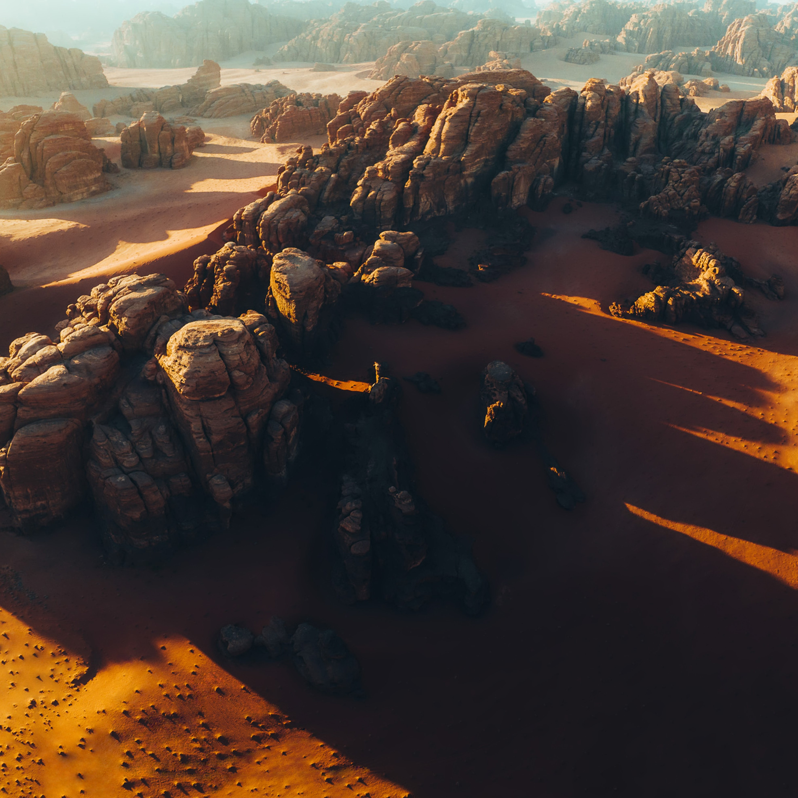
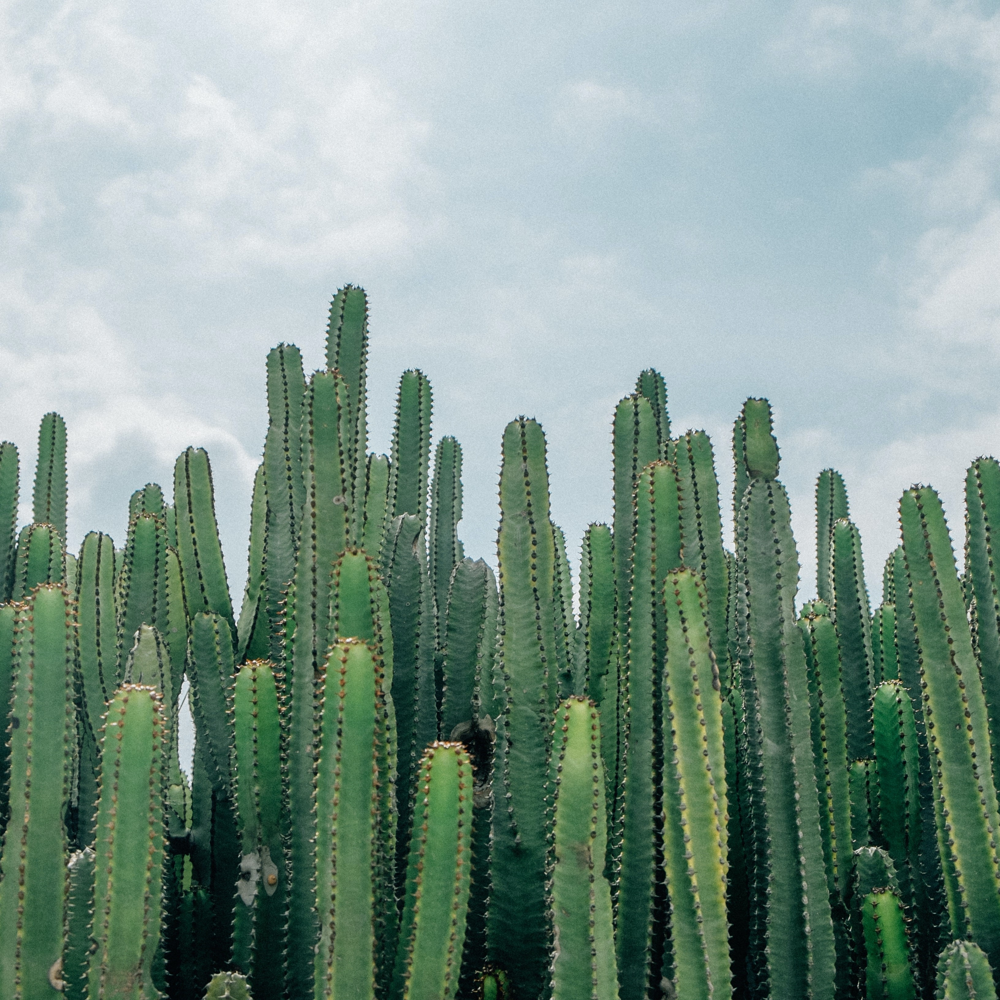

Montag - Freitag: 9:00 - 17:00 Uhr
Samstag & Sonntag: 9:00 - 18:00 Uhr
Änderungen stünden HIER
Gizehstrasse 42, 6009 Gizeh, Ägypten
Das Konzept des Wüstenzoos entstand in den frühen 2000er Jahren, als Zoos begannen,
sich auf die Verbesserung der Lebensbedingungen für ihre Tiere zu konzentrieren. Experten aus
verschiedenen
Bereichen entwickelten ein Design, das es Tieren ermöglicht, in einer Umgebung zu leben, die ihren
natürlichen
Lebensbedingungen ähnelt. Tierarten, die in der Wüste leben, wurden ausgewählt, um sicherzustellen, dass
sie
in der Wüstenumgebung gedeihen. Die Errichtung eines Wüstenzoos war jedoch nicht einfach, da
Wüstenumgebungen
schwierig künstlich nachzubilden sind. Heute ist der Wüstenzoo eine beliebte Attraktion für Besucher und
trägt
zum Schutz von Wildtieren und ihren Lebensräumen bei.